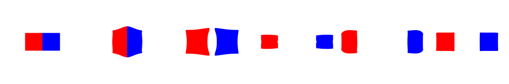

Particle-In-Cell Transfer
At the beginning of each simulation step, the grid must be cleared before accumulating new particle-to-grid transfers.
Implementation 30.2.1 (Reset Grid, simulator.py).
def reset_grid():
# after each transfer, the grid is reset
grid_m.fill(0)
grid_v.fill(0)
We adopt the Saint Venant–Kirchhoff (StVK) constitutive model formulated in the logarithmic (Hencky) strain space using the SVD of the deformation gradient.
Implementation 30.2.2 (Stvk Hencky Elasticity, simulator.py).
@ti.func
def StVK_Hencky_PK1_2D(F):
U, sig, V = ti.svd(F)
inv_sig = sig.inverse()
e = ti.Matrix([[ti.log(sig[0, 0]), 0], [0, ti.log(sig[1, 1])]])
return U @ (2 * mu * inv_sig @ e + lam * e.trace() * inv_sig) @ V.transpose()
During the particle-to-grid (P2G) transfer, we use quadratic B-spline interpolation to distribute each particle’s mass, momentum, and internal force to its neighboring grid nodes. This process follows the PIC (Particle-In-Cell) formulation, where particle velocities are directly transferred to the grid without storing affine velocity fields.
Implementation 30.2.3 (PIC Particle-to-Grid (P2G) Transfers, simulator.py).
@ti.kernel
def particle_to_grid_transfer():
for p in range(N_particles):
base = (x[p] / dx - 0.5).cast(int)
fx = x[p] / dx - base.cast(float)
# quadratic B-spline interpolating functions (Section 26.2)
w = [0.5 * (1.5 - fx) ** 2, 0.75 - (fx - 1) ** 2, 0.5 * (fx - 0.5) ** 2]
# gradient of the interpolating function (Section 26.2)
dw_dx = [fx - 1.5, 2 * (1.0 - fx), fx - 0.5]
P = StVK_Hencky_PK1_2D(F[p])
for i in ti.static(range(3)):
for j in ti.static(range(3)):
offset = ti.Vector([i, j])
weight = w[i][0] * w[j][1]
grad_weight = ti.Vector([(1. / dx) * dw_dx[i][0] * w[j][1],
w[i][0] * (1. / dx) * dw_dx[j][1]])
grid_m[base + offset] += weight * m[p] # mass transfer
grid_v[base + offset] += weight * m[p] * v[p] # momentum Transfer, PIC formulation
# internal force (stress) transfer
fi = -vol[p] * P @ F[p].transpose() @ grad_weight
grid_v[base + offset] += dt * fi
Right after Particle-to-Grid (P2G) Transfer, we normalize grid momentum to obtain nodal velocities and enforces Dirichlet boundary conditions near the domain edges by zeroing out velocities.
Implementation 30.2.4 (Grid Update, simulator.py).
@ti.kernel
def update_grid():
for i, j in grid_m:
if grid_m[i, j] > 0:
grid_v[i, j] = grid_v[i, j] / grid_m[i, j] # extract updated nodal velocity from transferred nodal momentum
# Dirichlet BC near the bounding box
if i <= 3 or i > grid_size - 3 or j <= 2 or j > grid_size - 3:
grid_v[i, j] = 0
During the grid-to-particle (G2P) transfer, we gather the updated velocity from the background grid and compute the elastic deformation gradient update using the velocity gradient derived from the interpolation function.
Implementation 30.2.5 (PIC Grid-to-Particle (G2P) Transfers, simulator.py).
@ti.kernel
def grid_to_particle_transfer():
for p in range(N_particles):
base = (x[p] / dx - 0.5).cast(int)
fx = x[p] / dx - base.cast(float)
# quadratic B-spline interpolating functions (Section 26.2)
w = [0.5 * (1.5 - fx) ** 2, 0.75 - (fx - 1) ** 2, 0.5 * (fx - 0.5) ** 2]
# gradient of the interpolating function (Section 26.2)
dw_dx = [fx - 1.5, 2 * (1.0 - fx), fx - 0.5]
new_v = ti.Vector.zero(float, 2)
v_grad_wT = ti.Matrix.zero(float, 2, 2)
for i in ti.static(range(3)):
for j in ti.static(range(3)):
offset = ti.Vector([i, j])
weight = w[i][0] * w[j][1]
grad_weight = ti.Vector([(1. / dx) * dw_dx[i][0] * w[j][1],
w[i][0] * (1. / dx) * dw_dx[j][1]])
new_v += weight * grid_v[base + offset]
v_grad_wT += grid_v[base + offset].outer_product(grad_weight)
v[p] = new_v
F[p] = (ti.Matrix.identity(float, 2) + dt * v_grad_wT) @ F[p]
Finally, particle positions are updated through advection using symplectic Euler time integration.
Implementation 30.2.6 (Particle State Update, simulator.py).
@ti.kernel
def update_particle_state():
for p in range(N_particles):
x[p] += dt * v[p] # advection
A full MPM simulation step consists of the following stages:
Implementation 30.2.7 (A full time step of MPM, simulator.py).
def step():
# a single time step of the Material Point Method (MPM) simulation
reset_grid()
particle_to_grid_transfer()
update_grid()
grid_to_particle_transfer()
update_particle_state()
